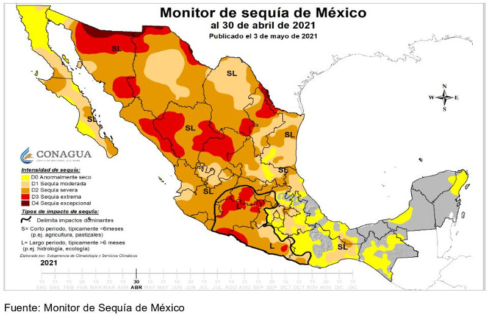
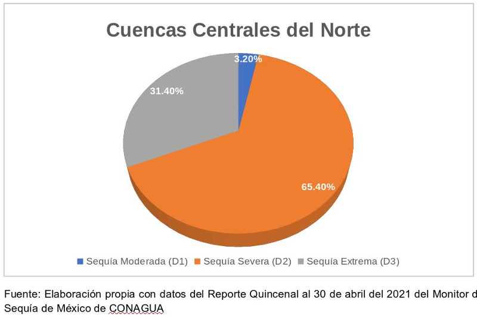
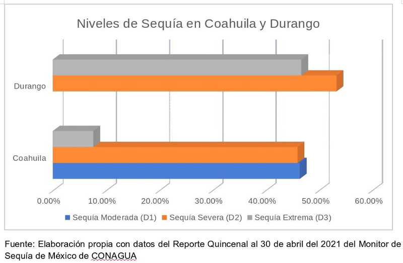
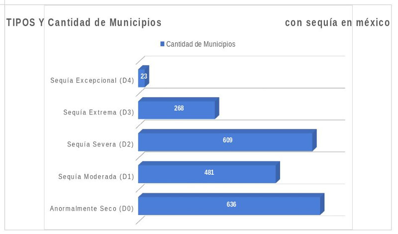
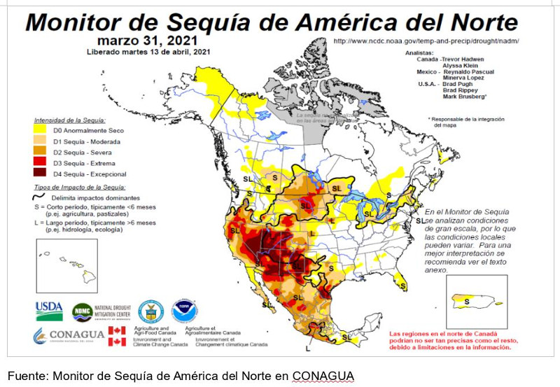
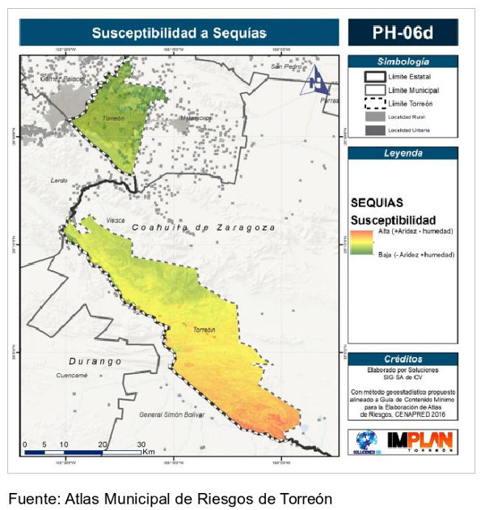

México se encuentra nuevamente ante la dificultad de la ausencia de lluvias y el agotamiento en sus reservas de agua. En el 2011 La Laguna y México sobrellevaron lo que, en su momento, se consideró la peor sequía en la historia reciente del país. Sin embargo, 10 años después la realidad vuelve acompañada de este mismo fenómeno con una magnitud inusitada, impactando el 84% del territorio nacional con algún nivel de sequía [ CITATION Var21 \l 2058 ].

De acuerdo con la Comisión Nacional del Agua (CONAGUA) existen distintos rangos de sequía, en una escala de menor a mayor intensidad la clasificación es, a saber: Anormalmente Seco (D0), Sequía Moderada (D1), Sequía Severa (D2), Sequía Extrema (D3) y Sequía Excepcional (D4) [ CITATION Com21 \l 2058 ]. Aun cuando la clasificación de los niveles de sequía responde a consensos internacionales, valdría la pena perseguir una mayor claridad entre las distinciones o, por lo menos, hacerlo en términos de difusión, con el fin de que la población reconozca con mayor facilidad las diferencias entre uno y otro rango. Ahora, según el reporte más reciente con información al 30 de abril publicado el 03 de mayo de 2021 se derivan distintos aspectos a considerar, por ejemplo, en el área territorial del Organismo de Cuenca Centrales del Norte (que comprende a la región de La Laguna) se registró 3.2% de Sequía Moderada (D1), 65.4% de Sequía Severa (D2) y 31.4% de Sequía Extrema (D3) [ CITATION Com211 \l 2058 ].

A nivel estatal, Coahuila consignó 7.6% de su área con Sequía Extrema (D3), 46% con Sequía Severa (D2) y 46.4% de Sequía Moderada (D1); entre tanto, Durango alcanzó la proporción más alta de Sequía Extrema (D3) en México, con 46.7%; el resto, 53.3% vivió una Sequía Severa (D2) [ CITATION Com21 \l 2058 ].

Esto significa que la situación del estado de Durango es una de las más graves de la república, pues, aunque no tiene ningún área con Sequía Excepcional (sólo Sonora, Chihuahua y Tamaulipas lo reportan), sus niveles de intensidad no son tan variados, allí sólo existe la Sequía Extrema y la Severa, algo sólo comparable con Sinaloa y Michoacán [ CITATION Com211 \l 2058 ]. En la escala municipal, Torreón vivió la mayor parte del año pasado en una variación entre Anormalmente Seco (D0) (la sequía más leve) y la Sequía Moderada (D1), pero este 2021 escaló hasta la Sequía Severa (D2) a partir de la segunda quincena de enero, prolongándose así hasta la mitad del mes de abril. No obstante, en las últimas dos semanas del mes pasado la intensidad se agudizó, lo que provocó que el municipio empezará a vivir una Sequía Extrema (D3) [ CITATION Com21 \l 2058 ]. Este escenario también se repite en los municipios de Matamoros y Viesca. Por su parte, el municipio de San Pedro es el menos afectado en la región hasta el momento, pues todavía se encuentra en el rango de una Sequía Severa (D2) y que es, por cierto, la segunda categoría más frecuente en la que se encuentra el resto del país que vive sequía, con 609 municipios [ CITATION Com211 \l 2058 ].

En relación a Durango, como ya se dijo previamente, el estado que vive resulta menos alentador. Cuencamé, Gómez Palacio y Lerdo padecieron una Sequía Extrema (D3) del 16 al 30 de abril. Sin embargo, en el caso particular de Cuencamé esto empezó desde el 16 de marzo, por ende, es el caso más grave de los municipios analizados, pues lleva más de un mes bajo esta condición. En este sentido, Mapimí y Tlahualilo han conservado su estatus de Sequía Severa (D2) [ CITATION Com21 \l 2058 ]. Para sumar a esta lista de riesgos, el Comité Nacional de Grandes Presas de la CONAGUA informó en abril que, de los 210 principales embalses (depósitos artificiales de agua) que hay en México, ninguno alcanza el 100% de llenado. En el caso de la presa Lázaro Cárdenas, obra estratégica para La Laguna, su disponibilidad de agua no supera el 50% [ CITATION Oso21 \l 2058 ]. Resulta necesario indicar que la comprensión de este problema no debe reducirse a la dimensión local, dado que su entendimiento sólo puede lograrse si se le ve desde una esfera regional, sino también nacional y mundial. Con esta premisa, es que la integración del Monitor de Sequía de México al de América del Norte con los gobiernos de Estados Unidos y Canadá encuentra un mayor sentido y utilidad.

Vivir con sequía no es algo menor y es, quizás, uno de los riesgos mundiales más latentes para desencadenar conflictos entre los Estados nacionales. Sus peligrosos alcances amenazan con debilitar el desarrollo de las sociedades y, previsiblemente, golpearan con mayor agresividad a los sectores que en el presente se ven expuestos a una penosa depauperación en su bienestar. Así, el académico del Tecnológico de Monterrey José Antonio Benjamín Ordoñez- Díaz apunta que la deforestación, la extensión de áreas urbanizadas y el cambio de bosques a campos de cultivo tiene efectos negativos en el suelo, pues hace más difícil que éste retenga el agua [ CITATION Var21 \l 2058 ]. Entre tanto, la investigadora del Colegio de México, Judith Domínguez subraya que hay una limitada planificación para prevenir y mitigar las sequías. Algo que podría cambiar esta ecuación, señala, sería el cambio de cultivos. Sostiene que “en estados muy secos del norte se cultiva alfalfa que requiere muchísima agua”. La académica concluye que, más que un problema de escasez de agua, lo que se tiene es una ineficiente gestión de este recurso [ CITATION Var21 \l 2058 ]. Los efectos negativos en el bolsillo tampoco se hacen esperar, de acuerdo al economista Enrique Quintana, el aumento en el precio de la tortilla, observado en las últimas semanas se debe, en buena medida, a la sequía [ CITATION Qui21 \l 2058 ]. Afortunadamente, entre las iniciativas sociales que buscan hacerle frente a este problema se ha desarrollado el Programa Irritila, el cual tiene como principal área espacial de intervención la Cuenca Alta del río Nazas. En ese sitio, la comunidad de los poblados serranos y personas voluntarias se esfuerzan en brindar protección al ecosistema para asegurar y mejorar el suministro de agua para la comarca lagunera [ CITATION Fun21 \l 2058 ]. Otro material que debe resaltarse, y que sirve como insumo informativo para las acciones públicas es el Atlas Municipal de Riesgos de Torreón, elaborado apenas el año pasado. Entre su amplio contenido hay un componente específico de Sequías, ahí se concluye que las secciones territoriales con mayor susceptibilidad a esta circunstancia son Flor de Jimulco, Barreal y la zona sur del área urbana. Por el contrario, las áreas menos susceptibles se hallan en esta posición debido a la presencia simultánea de la agricultura de riego [ CITATION IMP21 \l 2058 ].

Así las cosas, la sequía que vulnera a La Laguna, a México y gran parte del orbe, merece ser atendida no sólo desde iniciativas aisladas, sino que exige la aplicación de ambiciosas políticas públicas (como el proyecto de Agua Saludable para la Laguna) que garanticen la adecuada administración del agua para dotar de sostenibilidad a nuestro presente y futuro.
RESUMEN DE DATOS
Coahuila
7.6% Sequía Extrema
46% Sequía Severa
46.4% Sequía Moderada
Torreón, Viesca y Matamoros
Del 16 al 30 de abril con Sequía Extrema
San Pedro
Del 16 al 30 de abril con Sequía Severa
Durango
46.7% Sequía Extrema
53.3% Sequía Severa
Cuencamé, Gómez Palacio y Lerdo
Del 16 de abril al 30 de abril con Sequía Extrema
Mapimí y Tlahualilo
Del 16 al 30 de abril con Sequía Severa
Bibliografía
Comisión Nacional del Agua. (2021). Monitor de Sequía en México. Obtenido de Gobierno de México: https://smn.conagua.gob.mx/es/climatologia/monitor-de-sequia/monitor-de-sequia-en-mexico
Comisión Nacional del Agua. (03 de mayo de 2021). Monitor de Sequía en México. Obtenido de Gobierno de México: https://smn.conagua.gob.mx/tools/DATA/Climatolog%C3%ADa/Sequ%C3%ADa/Monitor%20de%20sequ%C3%ADa%20en%20M%C3%A9xico/Seguimiento%20de%20Sequ%C3%ADa/MSM20210430.pdf
Fundación Lala A.C. (2021). Fundación Lala A.C. Obtenido de Facebook: https://www.facebook.com/152895391559246/videos/327559058544933
IMPLAN Torreón y Soluciones SIG. (2021). Documentos: Planes y Programas. Obtenido de IMPLAN Torreón: http://www.trcimplan.gob.mx/sig-planes/index.html
Osorio, V. (26 de abril de 2021). Pega Sequía y Vacía Presas. Reforma, pág. 1.
Quintana, E. (04 de abril de 2021). ¿Viene otra ola de inflación? Obtenido de El Financiero: https://www.elfinanciero.com.mx/opinion/enrique-quintana/2021/05/04/viene-otra-ola-de-inflacion/
Real Academia Española. (2021). Diccionario. Obtenido de Real Academia Española: https://dle.rae.es/embalse#EaH5j76 Varela, M., Guerrero, H., & De Miguel, T. (24 de abril de 2021). La Sequía que Abrasa México. Una Tragedia Predecible y Devastadora. Obtenido de El País: https://elpais.com/mexico/2021-04-24/la-sequia-que-abrasa-mexico-una-tragedia-predecible-y-devastadora.html